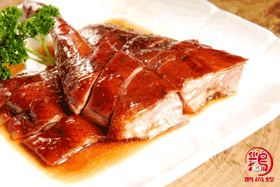

烧鸡培训
鹅尚煌烧鸡培训，由林发师傅秉承传统工艺，采用百年秘方，以多种药材和香料补品用文火精制而成。结合特色脆皮烧鸡特色做法和独家的香料配方，及快速入料法，制作的烧鸡外观靓丽金黄，表层酥脆，肉里嫩滑，鲜香诱人，回味无穷，完全不同于普通的烧鸡。鹅尚煌烧鸡做法培训更有道口烧鸡、脆皮烧鸡、白切鸡、香脆烤鸡、湛江鸡、企栋鸡等特色粤菜做法培训。从如何选材到百年秘方配制到制作烧鸡等全部毫无保留的传授，力保每位学员都能掌握烧鸡配方与技术，学有所成。

脆皮烧鸡
脆皮烧鸡是一道广东的传统名菜，属于粤菜。以鸡肉为主要食材，皮脆，肉鲜，骨香，口味咸鲜，色泽红亮，皮酥肉嫩，味道鲜美。脆皮烧鸡制作一般选用土鸡，把鸡洗净、去毛，放入油锅中略炸后捞起，再将制作脆皮烧鸡的材料，姜片、蒜头、米酒、八角、酱油、花椒等一起放入，与鸡一起用小火慢慢炖卤。脆皮烧鸡的做法多样，每个地去的脆皮烧鸡都不一样,而鹅尚煌烧鸡做法培训还专门为大家准备了脆皮烧鸡中企栋鸡的做法，一起来一探究竟吧。出原汁原味，鲜嫩可口。